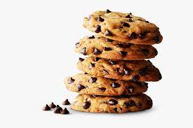

Chocolate Chip Cookie Recipe

Description:
This is chocolate chip cookie recipe from Tasty's very own Alvin Zhou, the maker of the 100 hour chocolate cake and other time-consuming recipes. However, unlike the opulence that is usally found in his recipes, this is a more down-to-earth and easily replicable version that is surely just as delicious!
Ingredients:
- 1/2 cup granulated sugar
- 3/4 cup brown sugar, packed
- 1 teaspon salt
- 1/2 cup unsalted butter, melted
- 1 egg
- 1 teaspon vanilla extract
- 1 + 1/4 cups all-purpose flour
- 1/2 teaspoon baking soda
- 110g milk or semi-sweet chocolate chunks
- 110g dark chocolate chunk, or you preference
Steps:
- In a large bowl, whisk together the sugars, salt, and butter until a paste forms with no lumps.
- Whisk in the egg and vanilla, beating until light ribbons fall off the whisk and remain for a short while before falling back into the mixture.
- Sift in the flour and baking soda, then fold the mixture with a spatula (Be careful not to overmix, which would cause the gluten in the flour to toughen resulting in cakier cookies).
- Fold in the chocolate chunks, then chill the dough for at least 30 minutes. For a more intense toffee-like flavor and deeper color, chill the dough overnight. The longer the dough rests, the more complex its flavor will be.
- Preheat oven to 350F (180C). Line a baking sheet with parchment paper.
- Scoop the dough with an ice-cream scoop onto a parchment paper-lined baking sheet, leaving at least 4 inches (10 cm) of space between cookies and 2 inches (5 cm) of space from the edges of the pan so that the cookies can spread evenly.
- Bake for 12-15 minutes, or until the edges have started to barely brown.
- Cool completely before serving, by itself or with a glass of cold milk.